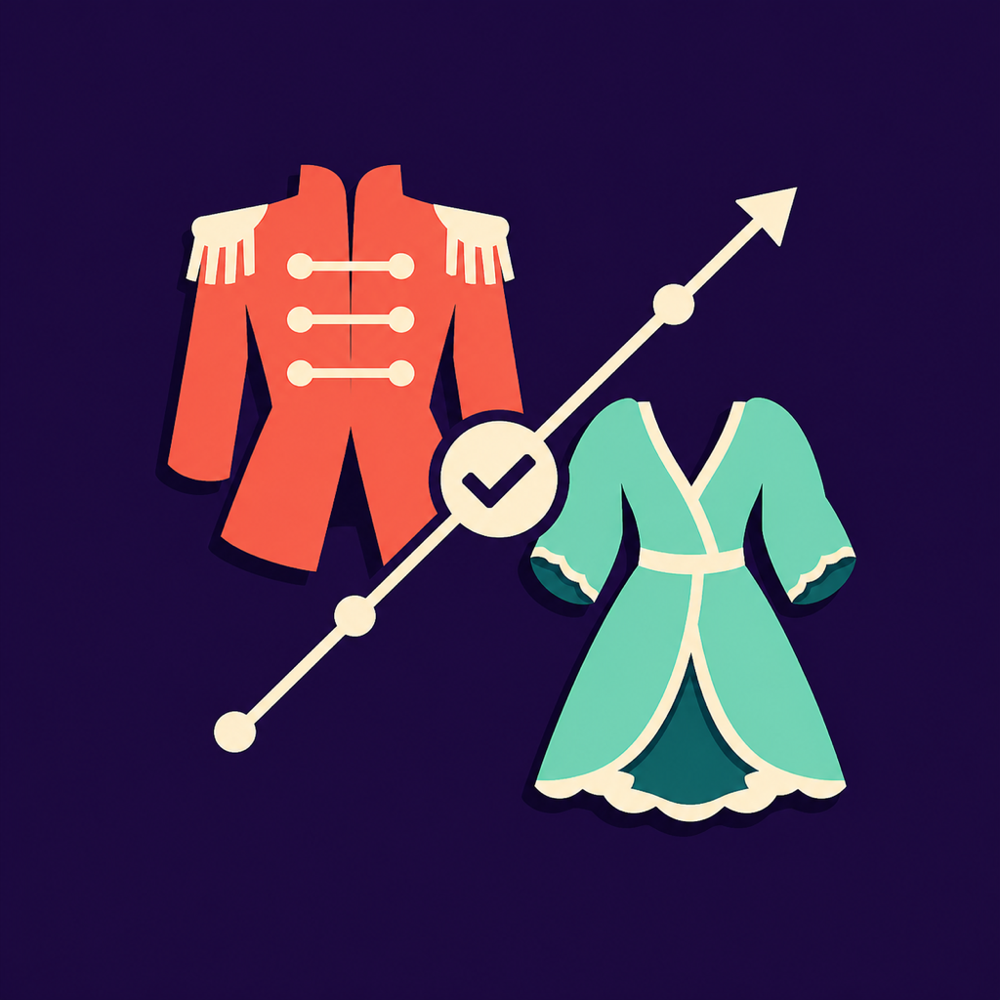

How can we help?
ChangePlot: Wardrobe keeps production plans on your device and turns your estimated show timings into quick-change windows, editable dresser tracks, Run Mode, and reports.
Build the production in three passes
Create or select a production, add performers and named looks in Wardrobe, then order scenes or dances in Show Order. Add appearance entrance and exit offsets before reviewing Changes.
What do Ready, Tight, and Conflict mean?
They are planning labels calculated only from the durations, offsets, and review threshold you enter. They are not safety ratings, approvals, or proof that a change can be completed. Rehearse the real change with the responsible people and revise any plan that would require rushing.
Is Run Mode connected to the live show?
No. You start the planned countdown manually. It does not receive cues, track performers, verify completion, control a show, or monitor safety. Optional haptics supplement the visible countdown.
Review before sharing
You can create performer plots, dresser tracks, preset and strike checklists, CSV files, combined PDFs, and a JSON backup. Review every export before rehearsal or distribution. A file leaves the app only when you choose an export or sharing destination.
Still need help?
Email compactrefinedapps@outlook.com and include your iOS or iPadOS version, app version, and a short description. Do not send confidential production material, performer details, health or accessibility information, passwords, or payment information.